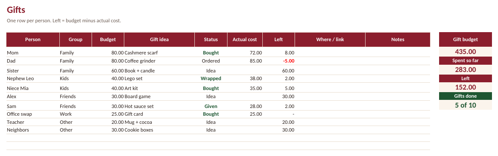
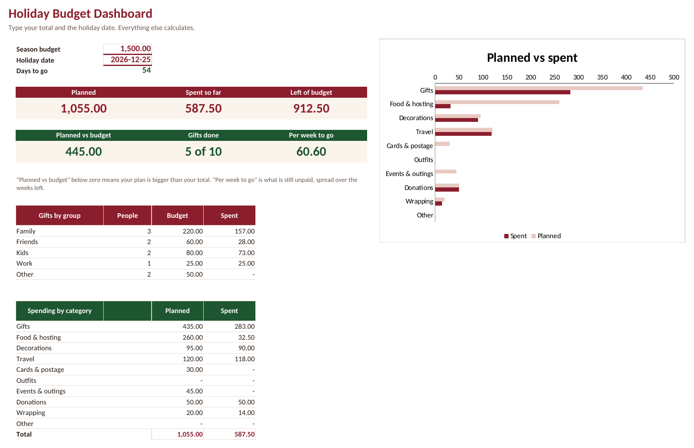

CHRISTMAS · FREE TOOLS
Christmas budget planner: per-person gift budget and a free gift list spreadsheet
Pick one total you can pay without borrowing, take out the costs that are not gifts, and split the rest across your list. The calculator below does the math and tells you what to set aside each week until December 25. Nothing you type is saved.
Left for gifts
Per person
Set aside each week
Free Christmas gift list spreadsheet
One row per person: group, budget, gift idea, status (Idea, Ordered, Bought, Wrapped, Given) and what it actually cost. The box on the right keeps your gift budget, spent so far, what is left and how many gifts are done.
Download the free gift list (.xlsx)Excel and Google Sheets. Totals checked in LibreOffice. No email needed.

Want the whole season in one place?
The full Holiday Budget & Gift Tracker adds everything that is not a gift and a dashboard that keeps the season in view.
| Free gift list | Full tracker ($5) | |
|---|---|---|
| Gift list with budget, status and actual cost | Yes | Yes |
| Food, decorations, travel, cards, outfits, donations (planned vs actual) | No | Yes |
| Dashboard: season total, left of budget, days to go, money per week | No | Yes |
| Spending by group and category with a chart | No | Yes |

See the Holiday Budget & Gift Tracker ($5) →Three habits that keep Christmas on budget
- Decide the total first. Every other number comes from it. If the per-person amount looks too small, shorten the list or swap some gifts for shared experiences before you shop.
- Count the costs that are not gifts. Food, travel, wrapping and postage are easy to forget and often add up to a big part of the season.
- Set money aside weekly. A fixed amount each payday is easier than one large hit in December, and it keeps the January card bill smaller.
Related
- Secret Santa generator with private links
- Holiday budget calculator
- How to make a holiday budget plan
- Sinking funds calculator (start next year's Christmas fund in January)
- Free 2027 budget spreadsheet
- Español: lista de regalos de Navidad gratis